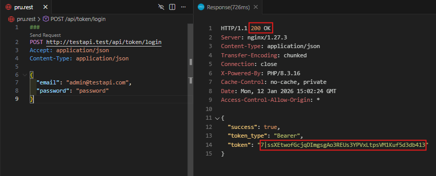
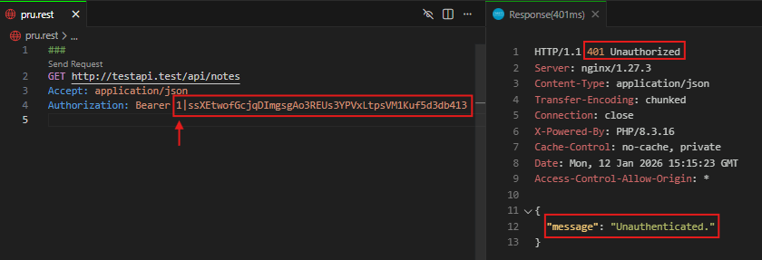

10.4. Autenticación con tokens¶
10.4. Autenticación con tokens¶
Hasta ahora, cualquiera puede leer, crear o borrar notas. En este apartado protegemos la API para que solo la usen clientes autenticados.
1. Autenticación y autorización¶
| Concepto | Pregunta | Ejemplo | Código si falla |
|---|---|---|---|
| Autenticación | ¿Quién eres? | Enviar un token válido | 401 Unauthorized |
| Autorización | ¿Puedes hacer esto? | Solo el autor puede borrar su nota | 403 Forbidden |
En este apartado tratamos la autenticación. La autorización (propietarios, roles y policies) se trata en la unidad 11.
2. ¿Por qué tokens y no sesión?¶
En la unidad 9 la autenticación se basaba en la sesión: después del login, el navegador guardaba una cookie y la enviaba en cada petición. Una API REST es sin estado: el cliente puede ser Postman, una app móvil o un script, que no gestionan cookies como un navegador. Por eso el cliente se identifica en cada petición con un token:
GET /api/notes
Authorization: Bearer 7|ssXEtwofGcjqDImgsgAo3REUs3YPVxLtpsVM1Kuf5d3db413
Laravel Sanctum (instalado por php artisan install:api en el apartado 10.1) genera los tokens, los guarda en la tabla personal_access_tokens y los comprueba con el middleware auth:sanctum.
3. El modelo User¶
Para generar tokens, el modelo User debe usar el trait HasApiTokens (install:api lo recuerda al terminar):
use Laravel\Sanctum\HasApiTokens;
class User extends Authenticatable
{
/** @use HasFactory<\Database\Factories\UserFactory> */
use HasApiTokens, HasFactory, Notifiable;
// ...
}
Sin este trait no existe el método createToken().
4. Controlador de autenticación¶
php artisan make:controller Api/TokenAuthController
En app/Http/Controllers/Api/TokenAuthController.php:
<?php
namespace App\Http\Controllers\Api;
use App\Http\Controllers\Controller;
use App\Models\User;
use Illuminate\Http\JsonResponse;
use Illuminate\Http\Request;
use Illuminate\Support\Facades\Hash;
use Illuminate\Validation\ValidationException;
class TokenAuthController extends Controller
{
public function login(Request $request): JsonResponse
{
$credentials = $request->validate([
'email' => ['required', 'email'],
'password' => ['required'],
'device_name' => ['nullable', 'string', 'max:255'],
]);
$user = User::where('email', $credentials['email'])->first();
if (! $user || ! Hash::check($credentials['password'], $user->password)) {
throw ValidationException::withMessages([
'email' => 'Las credenciales no son correctas.',
]);
}
$token = $user->createToken($credentials['device_name'] ?? 'rest-client');
return response()->json([
'success' => true,
'token_type' => 'Bearer',
'token' => $token->plainTextToken,
]);
}
public function logout(Request $request): JsonResponse
{
$request->user()->currentAccessToken()->delete();
return response()->json([
'success' => true,
'message' => 'Logout correcto',
]);
}
}
- El login no usa la sesión: busca el usuario, comprueba la contraseña con
Hash::checky crea un token. Es la forma que recomienda la documentación de Sanctum para clientes que no son un navegador. - Si las credenciales no son correctas, responde
422con el error en el campoemail, igual que cualquier otra validación. plainTextTokensolo se puede leer en este momento: en la base de datos se guarda cifrado. El cliente debe guardarlo.logoutborra solo el token con el que se ha hecho la petición. Si el usuario tiene otros dispositivos conectados, siguen funcionando.
5. Rutas¶
En routes/api.php:
use App\Http\Controllers\Api\NoteController;
use App\Http\Controllers\Api\TokenAuthController;
use Illuminate\Http\Request;
use Illuminate\Support\Facades\Route;
// Pública: obtener un token (como mucho 6 intentos por minuto)
Route::post('/token/login', [TokenAuthController::class, 'login'])
->middleware('throttle:6,1');
// Protegidas: hace falta un token válido
Route::middleware('auth:sanctum')->group(function () {
Route::get('/user', fn (Request $request) => $request->user());
Route::post('/token/logout', [TokenAuthController::class, 'logout']);
Route::apiResource('notes', NoteController::class);
});
Si una ruta protegida recibe una petición sin token, o con un token no válido, la respuesta es 401 con {"message": "Unauthenticated."}.
6. Usuario de prueba¶
php artisan tinker
App\Models\User::create([
'name' => 'Admin',
'email' => 'admin@testear.com',
'password' => 'password',
]);
El modelo User aplica el cast hashed a la contraseña, así que se guarda cifrada aunque la escribamos en claro.
7. Pruebas con REST Client¶
REST Client puede guardar el token de una respuesta y reutilizarlo: se pone nombre a la petición de login con # @name y se lee con {{login.response.body.token}}.
@base = http://testear.test/api
### Login
# @name login
POST {{base}}/token/login
Accept: application/json
Content-Type: application/json
{
"email": "admin@testear.com",
"password": "password"
}
### Notas sin token (debe responder 401)
GET {{base}}/notes
Accept: application/json
### Notas con token
GET {{base}}/notes
Accept: application/json
Authorization: Bearer {{login.response.body.token}}
### Logout
POST {{base}}/token/logout
Accept: application/json
Authorization: Bearer {{login.response.body.token}}



Después del logout, cualquier petición con ese token devuelve 401.
8. Actualizar los tests¶
Ahora las rutas de notas exigen autenticación y los tests del apartado 10.3 recibirían 401. Sanctum permite simular un usuario autenticado con Sanctum::actingAs. Añádelo al principio de cada test que necesite un usuario, y añade un test que compruebe que sin autenticación se responde 401:
use App\Models\User;
use Laravel\Sanctum\Sanctum;
public function test_sin_token_responde_401(): void
{
$this->getJson('/api/notes')->assertUnauthorized();
}
public function test_lista_las_notas_paginadas(): void
{
Sanctum::actingAs(User::factory()->create());
Note::factory()->count(3)->create();
$this->getJson('/api/notes')
->assertOk()
->assertJsonCount(3, 'data');
}
9. Qué aporta cada pieza¶
| Elemento | Responsable |
|---|---|
Archivo api.php, Sanctum y tabla de tokens |
php artisan install:api |
| Crear y borrar tokens | TokenAuthController (lo escribimos nosotros) |
| Comprobar el token en cada petición | Middleware auth:sanctum |
| Limitar intentos de login | Middleware throttle:6,1 |
| Probar el flujo | REST Client y tests |
¿Y si el cliente es una SPA en el navegador?
Los tokens Bearer son la mejor opción para Postman, apps móviles o servidores. Para un frontend en Vue servido en el navegador, Sanctum ofrece un modo más seguro basado en cookies de sesión, que no obliga a guardar el token en JavaScript. Lo veremos en la unidad 11.